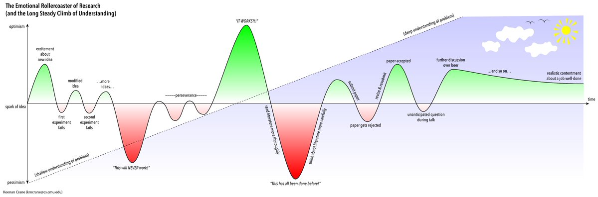
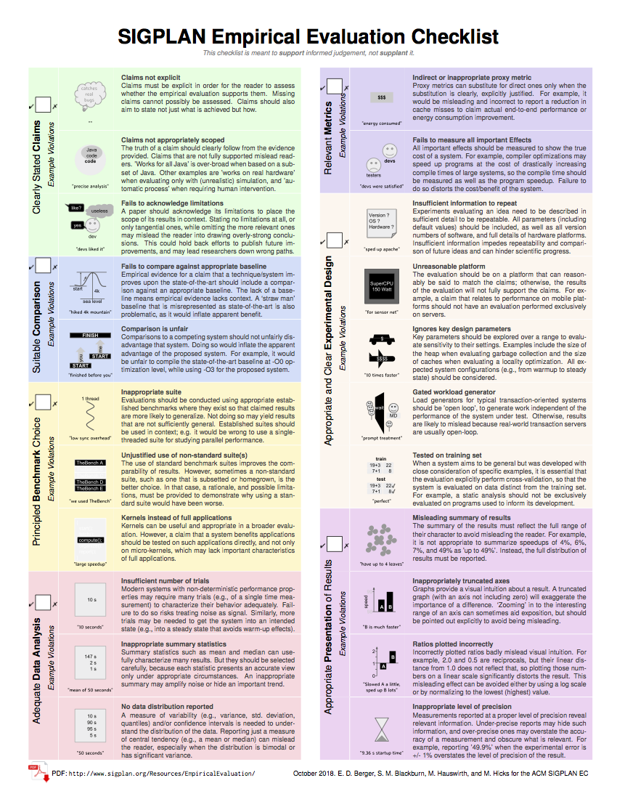
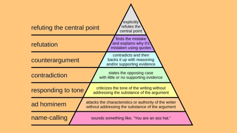

Estabelecendo uma rotina de pesquisa

A premissa básica do que apresento a seguir é que você quer aprender a realizar pesquisa de alta qualidade, pesquisa de verdade. Se esse não é seu desejo, muito do que sugiro a seguir não vai fazer sentido para você.
O básico do básico
O seu foco principal deve ser na sua formação como pesquisador, nos seus valores, na qualidade e relevância da sua pesquisa, e no seu interesse em realizá-la. Em segundo plano, deve vir o foco na obtenção de resultados e reconhecimento: artigos e ferramentas publicados, participações em eventos, citações, prêmios, etc. Para isso, foque em artigos com mais conteúdo, ao invés de mais artigos incrementais.
Busque o equilíbrio entre trabalho e outros aspectos da sua vida, mas mantenha um forte ritmo de trabalho durante o seu mestrado e doutorado, e tente não perder esse ritmo a menos que seja estritamente necessário ou que seu trabalho já esteja consolidado.
Siga as recomendações de The real final exam, principalmente as seguintes: vá além dos resultados, explore as implicações dos mesmos; resultados inesperados, ou que contradizem experimentos anteriores, são os que precisam ser melhor entendidos e explorados; quebre um experimento complexo em experimentos menores; dê crédito a quem merece; entenda e explique as limitações do seu trabalho.
Na escolha de um tema de pesquisa, valorize mais a importância do tema do que a sua popularidade ou facilidade para exploração.
Seja crítico. Nem sempre as ideias, ferramentas, etc. de pesquisadores ou empresas de destaque são as melhores.
Busque a simplicidade nas soluções propostas. A complexidade desnecessária dificulta a adoção, o ensino, e o progresso dos seu resultados de pesquisa.
Leia muitos artigos e veja muitos vídeos, continuamente, para ter uma boa noção da sua área de pesquisa, métodos de pesquisa utilizados, principais resultados e teorias existentes. Leia também trabalhos de outras áreas, além da Computação, que possam ser úteis e relacionados ao seu trabalho. Muita inovação advém dessa contínua atividade de leitura; veja um excelente exemplo disso nesta inspiradora apresentação de Amy Ko.
Mantenha um diário de pesquisa, onde você anota todas as atividades realizadas e a realizar, dificuldades encontradas, resultados obtidos e suas limitações, etc. Você pode fazer isso de diversas formas, escolha a que achar mais apropriada. Uma alternativa interessante é fazer isso através de um conjunto de slides, que vai sendo incrementado ao longo do seu trabalho, e já serve tanto como registro do seu diário quanto como forma de apresentar o andamento do seu trabalho e discutir com seu orientador e colegas em reuniões regulares.
Esteja preparado para os altos e baixos da vida de um pesquisador, conforme a figura a seguir. 
Buscando a excelência e relevância do seu trabalho
Os seus resultados de pesquisa devem ser rigorosamente avaliados, para aumentar a sua confiança nos mesmos e antecipar falhas no seu processo de pesquisa. Em particular, avalie várias dimensões: corretude (soundness), efetividade (ganhos em qualidade, produtividade, precisão, etc.), usabilidade (facilidade de uso, e o potencial de aumentar a capacidade de indivíduos, equipes, e organizações), e replicabilidade.
A menos que sua pesquisa foque na busca do entendimento de questões fundamentais da área, sem considerações de uso (ver o quadrante de Pasteur), mantenha contato com seus potenciais clientes e usuários para que seu trabalho de pesquisa e os resultados derivados sejam relevantes. Entreviste-os, convide-os para apresentar seminários no grupo de pesquisa, converse com eles, valide os seus resultados com eles, e participe de eventos mais práticos da comunidade profissional.
Experimente e observe bem as atividades profissionais relativas ao tópico da sua pesquisa. Colocando a mão na massa, e observado outros fazer o mesmo, você poderá desenvolver uma intuição pessoal importante para derivar ideias (soluções para problemas relevantes, perguntas de pesquisa a serem respondidas, conceitos e teorias explicativas, etc.) consistentes para a sua pesquisa.
Consulte sites de notícias como Reddit, e sites de perguntas e respostas como Stack Overflow, para tirar dúvidas, realizar enquetes, e entender melhor questões atuais de interesse de desenvolvedores.
Comunicação é quase tudo
Mantenha comunicação frequente com o orientador, em reuniões (presenciais ou remotas) ou via chat, para tirar dúvidas, relatar atividades, e tomar decisões de projeto. Isso deve ser feito no mínimo uma vez por dia, para pelo menos dizer o que fez naquele dia e o que pretende fazer no próximo.
Durante as reuniões com o seu orientador, anote as atividades sugerida por ele, idealmente no chat (no canal do projeto, ou no seu chat com o seu orientador, se não houver um canal do projeto).
Participe regularmente da reunião semanal do seu grupo de pesquisa. Os seminários do seu grupo de pesquisa, em particular, têm tanto uma utilidade técnica (aprender ou explicar novidades, dar e receber feedback, entender pontos que precisam ser melhor esclarecidos ou explorados no seu trabalho, etc.) e educacional (o aluno aprende a se expor, explicar ideias para pessoas que trabalham em áreas um pouco diferentes, etc.) quanto social (os alunos e professores se conhecem melhor, identificam possíveis pontos de colaboração, estabelecem conexões, ficam sabendo de novidades, etc.).
Cuidados éticos e metodológicos essenciais
Se sua pesquisa envolve a participação de pessoas (“Research involving a living individual about whom data or biospecimens are obtained/used/studied/analyzed through interaction/intervention, or identifiable, private information is used/studied/analyzed/generated”), seguir rigorosamente as recomendações do guia da ACM sobre o assunto.
Use como guia a lista de tópicos da ACM Sigsoft para ter certeza de que você vai seguir principais pontos necessários para o tipo de estudo empírico que você está fazendo. Veja primeiro a opção de menu Standards e depois a opção Tools, para gerar a lista específica para o seu tipo de estudo.
Use também a lista de verificações da ACM Sigplan  para evitar erros metodológicos ou de apresentação.
Certifique-se de que sua conduta de pesquisa é adequada, e que você não comete nenhum destes deslizes de má conduta, principalmente os seguintes, que aparecem com pequenas diferenças no artigo referenciado: Selectively cite to enhance your own findings or convictions; Conceal results that contradict your earlier findings or convictions; Insufficiently report study flaws and limitations; Duplicate publication without disclosure; Re-use of previously published data without disclosure; Use unpublished phrases or ideas of others without their permission; Re-use parts of your own publications without referencing; Demand, offer or accept an authorship for which one does not qualify; Selectively cite to please editors, reviewers, or colleagues; Fabricate data; Selectively delete data, modify data or add fabricated data after performing initial data-analyses; Choose a clearly inadequate research design or using evidently unsuitable measurement instruments; Modify the results or conclusions of a study due to pressure of a sponsor (or anyone else); Unfairly review papers, grant applications or colleagues applying for promotion; Ignore substantial safety risks of the study to participants, workers, or environment; Ignore basic principles of quality assurance; Keep inadequate notes of the research process; Turn a blind eye to putative breaches of research integrity by others.
Além de responder perguntas de pesquisa e avaliar hipóteses (What? How?), associe a esses resultados teorias (Why?) que ajudem a explicá-los. Explicite a teoria em pelo menos um parágrafo do artigo.
Em estudos qualitativos, evitar entrevistas ou questionários com perguntas que retratem a percepção de uma pessoa sobre se uma dada tecnologia é útil, já que as respostas dificilmente poderão ser utilizadas para se chegar a uma conclusão. Melhor perguntar, por exemplo, que vantagens e desvantagens estão associadas ao uso da tecnologia. Mesmo assim isso reflete a percepção da pessoa, então temos que derivar conclusões com cuidado, e refletindo explicitamente esse aspecto da percepção (que obviamente pode diferir da realidade).
Dando e recebendo feedback
Invista em dar feedback detalhado e rigoroso sobre o trabalho de outros pesquisadores, como você gostaria de receber.
Seja positivo; evite sarcasmo; mencione primeiro os pontos positivos e só depois os negativos; fale primeiro sobre o conteúdo e só depois sobre a forma de apresentação; dê sugestões concretas de melhorias; no final reforce brevemente os principais pontos positivos.
Cobre do seu orientador e colegas feedback como sugerido acima.
Quando recebendo feedback, não tente ficar se defendendo, dando explicações sobre os aspectos negativos apontados. É melhor concentrar em anotar os aspectos negativos, e fazer perguntas para melhor entender o que o seu interlocutor está querendo dizer. Se houver tempo, no final, você pode dar algumas explicações.
Veja nesta figura (de How to disagree well: 7 of the best and worst ways to argue”)  as diversas formas de discordar de alguma ideia ou opinião, tanto para que você saiba discordar de forma justa e efetiva, quanto para que você consiga perceber quando outros estiverem discordando de forma injusta e apelativa.